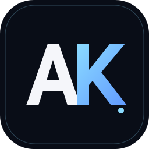

SERVICE OVERVIEW
REPAIR OPERATIONS · CONCEPT
2025—26HD PLUS
A repair-center management concept for customer records, device details, repair requests, maintenance status, payments and follow-ups.

ABDULLAH KHALED IBRAHIMBIS · DELTA HIGHER INSTITUTE FOR MANAGEMENT INFORMATION SYSTEMS
I’m Abdullah — an Information Systems student exploring the space where thoughtful interfaces, useful software, and real-world workflows meet.
01 / 04 CURIOUS BY DESIGN
01A FEW THINGS IN PROGRESS
Concepts shaped by everyday problems, explored through systems thinking and user experience.
A repair-center management concept for customer records, device details, repair requests, maintenance status, payments and follow-ups.
A business solution concept for organizing repair requests, tracking customers, and making service operations easier to follow.
An educational assistant concept for lecture summaries, Q&A, practice quizzes, and learning progress.
Personal concepts at different stages of exploration. Planned technologies are proposed directions, not claims of completed implementation.
02A LITTLE ABOUT ME
I’m an Information Systems student at Delta Higher Institute for Management Information Systems (BIS), interested in how digital products can make everyday work feel simpler.
I’m building my foundation across interface design and software development, while exploring practical concepts for repair services, business workflows, and student learning. I like understanding a problem from both the people and systems sides, then shaping a clear direction to explore.
Let’s talk ↗03TOOLS & CRAFT
A growing toolkit across design, technology, and the systems that connect them.
Figma · User flows · Wireframing · Prototyping · Usability
HTML5 · CSS3 · JavaScript · React · Responsive design
Python · C# · WPF · Node.js · Database concepts
Analysis · Problem-solving · Teamwork · Self-learning · Requirements planning
04THE JOURNEY CONTINUES
A learning path connected to the skills and ideas already in my portfolio. One step at a time.
Strengthen user flows, usability thinking, and turn Figma explorations into clear prototypes.
BUILDING THE FOUNDATIONBuild on HTML, CSS, JavaScript, and React fundamentals through responsive interfaces.
PRACTICE THROUGH PROJECTSExplore Python and the Gemini API as planned building blocks for the Zaghlool AI concept.
PLANNED EXPLORATIONExplore database concepts, business requirements, and desktop development with C# and WPF.
LEARNING BY EXPLORINGA roadmap based on the interests shared for this portfolio; these are learning directions, not claims of completed expertise.
05EDUCATION
Business Information Systems · Egypt
06HAVE A GOOD QUESTION OR IDEA?